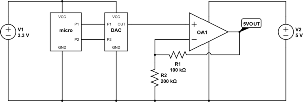

Hi- I was wondering if anyone out there is using their axoloti to do midi to cv for v/oct analog oscillators. I am hoping to be able to use the scalaloader object to load tuning files and then send out voltages on the analog gpio outs. I haven't tried it yet but in theory the axoloti digital oscillators respond to numerical scale in the same way that analog oscillators respond to voltage. That is if you equate 12 in the axoloti patcher to 1v - every additional 12 creates a doubling of frequency in the axoloti digital oscillators - the same way that v/oct works. The only thing is that I'd like to have more than 3 octaves available at a time if possible. My guess would be that you could divide the axoloti frequency number by 2 and then double the output voltage in the analog realm. But how much accuracy could that actually provide with the 12bit dac on the gpio pin? Maybe for equal temperament its ok but not for microtonal? Anyways, would love to hear if anyone else has used it like this and what your practical experience has been. Thanks in advance!
Using axoloti to play v / oct analog synths
This (got it from a Google search) circuit shows how to use a single-supply rail-to-rail opamp to produce an output of 0 to almost 5v. So, close to 5 octaves.
The dac output is 12 bits, so 5/4096=1.22mv is the approximate value of each step. A semi-tone is 8.33mv.

Looks like this would work. I'd usually simulate it in Falstad CircuitJS to make sure no obvious errors have sneaked in.
You'd probably either fine tune the response in software, or replace R2 with something like a 150k resistor and a 100k trimmer in series.
The design might even benefit from lower resistor values with the same ratio, e.g. R1 47k, R2 100k, or R1 10k, R2 20k. Depends on the circuit on the other side receiving the CV.
If it was me I'd put a protective 1k resistor in series with the CV output before it goes to the jack.
Agreed, a rail to rail opamp like the ever popular MCP600x would do the job.
12bit DACs like the one from the Axoloti MCU are not super accurate but quite acceptable. Many recent Eurorack CV designs use 12bits and it didn't obstruct people in making good music